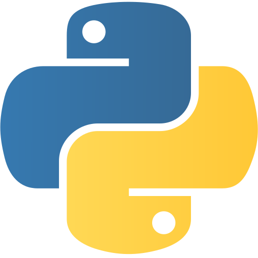
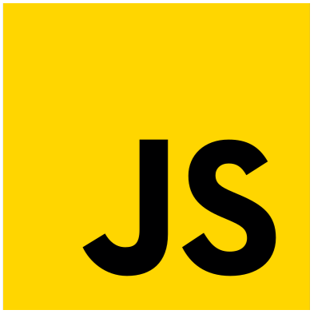
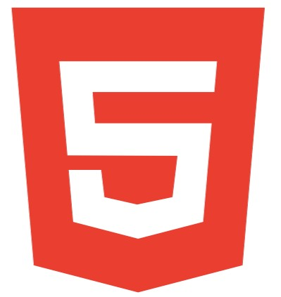

Me chamo Davi
Atualmente em 2026 tenho 17 anos e estou em meu último ano de Ensino Médio e do Curso de Desenvolvimentos de Sistemas do SENAI.
Minhas experiências
Iniciei minha "Vida de Trabalhador" como Gesseiro e ali aprendi muito sobre responsabilidade, autonomia, controle emocional/situacional, e também, sobre como a vida e o dinheiro funciona.
Atualmente, além do Gesso, também trabalho ajudando meu pai com instalações de papéis de parede, pintura e algumas restaurações.
A respeito de minha área profissional, pretendo atuar no mercado de trabalho como programador Full-Stack ou algo relacionado na área de tecnologia
Tratando de um lado mais pessoal, eu também aprendi muito sobre trabalho em equipe e interações sociais, graças a igreja que frequento, onde participo de uma banda como Baterista e agora discipulo um adolescente de 13 anos chamado Pedro, onde o ensino sobre os principios da Fé e o carater de um cristão verdadeiro de acordo com a Bíblia. Apesar de ser eu quem o ensina, eu também aprendo muito com ele, pois ele me ajuda a me dedicar mais no meu desenvolvimento como "Professor" e ainda, como pessoa.
Minhas Habilidades
Como aprendiz de DS, atualmente possuo conhecimento nas seguintes linguagens:
-

Python -

JavaScript -
 PHP
PHP -

HTML -
 CSS
CSS -
 DART
DART
Em todas as minhas "construções" de sites eu sempre prezo pelo UI e UX, deixando o design responsivo e organizado.
Atualmente este é meu principal projeto, onde junto com outras 4 pessoas, estou trabalhando para o nosso TCC.
Aqui você pode encontrar alguns de meus projetos: